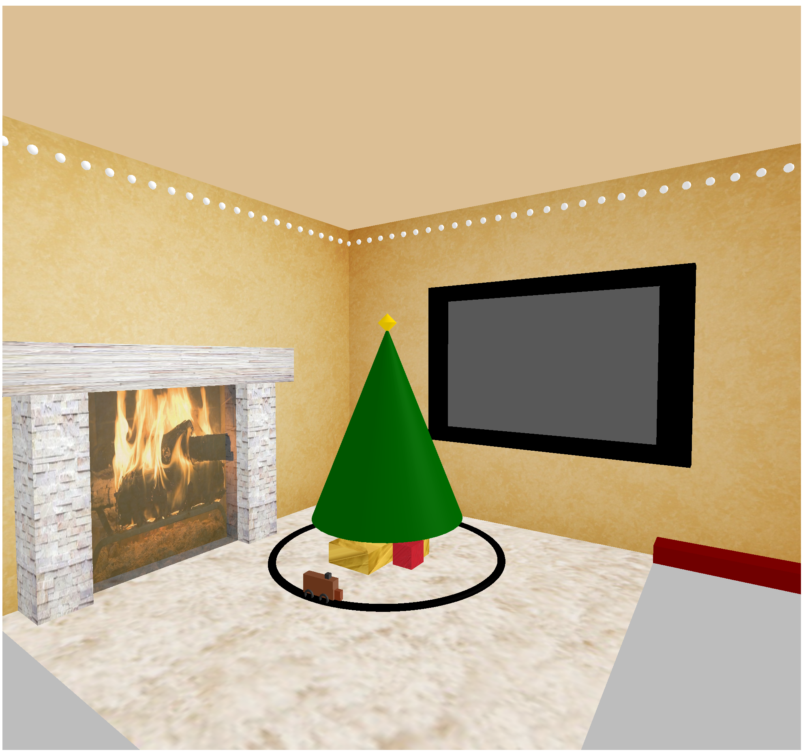
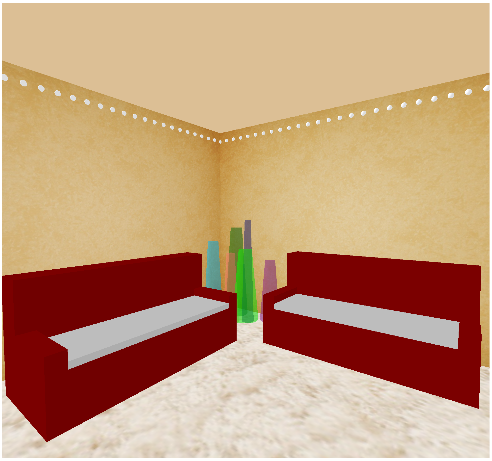

The tree, trunk and star at the top of the tree use a cylinder geometry and PhongMaterial. The presents at the bottom of the tree are texture mapped and are created using a box geometry. The different parts of the tree are created and then added to a 3D Object.
The train is modeled using different kinds of box geometry. The train is all PhongMaterial, yet each box geometry has a different color associated with it. The wheels of the train are created using a torus geometry, as are the train tracks. The train tracks are situated with the center point being the location of the chrismas tree in the scene. The train is situated on top of the tracks, and is animated to go around the tracks.
The fireplace contains a mantle (created using box geometries and texture mapping) and a plane with a slightly transparent mapping of a fire. The material used for the mantle is PhongMaterial and BasicMaterial for the fire plane. The parameters to set the fireplace dimensions are defined in fireParams and are used for both the mantle and the plane construction. The mantle and fire is positioned in the middle of the back wall.
Little string lights are placed along the top perimeter of the room. The string lights are white spheres (SphereGeom) with PhongMaterial that are repeated along the edges of the room. Another part of the decor is the TV object, which is a boxGeometry with a transparent white plane overlaid on top of it. The TV is found on the right wall, about halfway up.
Each individual couch is made up of different box geometries. The material used throughout the model is PhongMaterial. Each part of the couch (side, base, back, and cushions) have different parameters of width, height and depth. The couch is positioned on the left hand side against the wall. A clone of this couch object is rotated and positioned in the center of the roomon the z axis (it's back is visible to the viewer when the scene first rendered).
A group of transparent vases were created and randomly put (coordinates are arbitrary) into an order that is aesthetically pleasing. Each vase is a cylinder that can be altered (using the radius variables, the height variable, and the color variable. Important to note: the position values were all randomly picked based on aesthetic appeal - those can be modified easily. Current position of the vases is in the front left corner of the room/bounding box.
